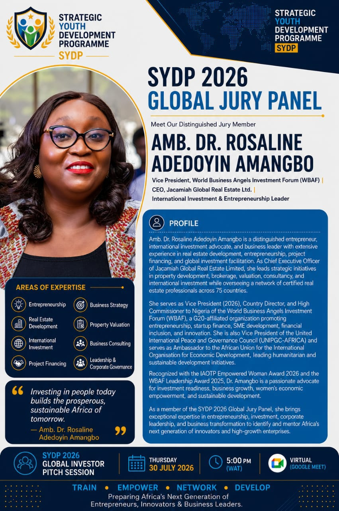

View full profile ↗Amb. Dr. Rosaline Adedoyin Amangbo
Vice President, World Business Angels Investment Forum (WBAF) · CEO, Jacamiah Global Real Estate Ltd.
International investment advocate and business leader in real estate development, project financing and global investment facilitation, overseeing a network of certified professionals across 75 countries.
Investing in people today builds the prosperous, sustainable Africa of tomorrow.